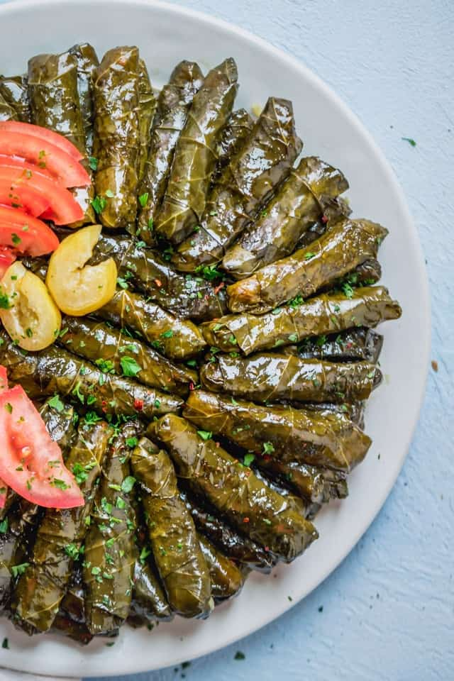

Odin Recipes - Stuffed Grape Leaves
back to index
Prep Time: 45 mins Cook Time: 1 hrs 15 mins Total Time: 2 hrs 30 mins
Servings: 12 Yield: 60 stuffed grape leaves
Ingredients
-
1 tablespoon olive oil
-
2 cups uncooked long-grain white rice
-
1 large onion, chopped
-
½ cup chopped fresh dill
-
½ cup chopped fresh mint leaves
-
2 quarts chicken broth, divided
-
¾ cup fresh lemon juice, divided
-
60 fresh grape leaves
-
1 cup olive oil
Directions:
Step 1
Heat olive oil in a large saucepan over medium-high heat. Add rice, onion, dill, and mint; sauté until onion is soft, about 5 minutes. Pour in 1/2 of the broth, reduce the heat to low, and simmer until rice is almost cooked through, 10 to 15 minutes. Stir in 1/2 of the lemon juice and remove from the heat.
Step 2
Plunge grape leaves into a deep container of very hot water until soft, about 10 seconds; pat dry.
Step 3
Place a grape leaf onto a work surface with the shiny side facing down. Place 1 teaspoon rice mixture on leaf at the stem end; fold both sides in toward the center and roll up from the wide bottom to the top. Place stuffed leaf into a 4-quart pot. Repeat to stuff remaining leaves, packing them into the pot tightly so they don't open while cooking.
Step 4
Drizzle olive oil and remaining lemon juice over leaves, then pour in remaining broth to cover. Cover the pot and simmer for about 1 hour; do not let it boil as the stuffing may burst out of the leaves.
Step 5
Remove from the heat, uncover, and let cool for 30 minutes. Transfer to a serving dish and serve.